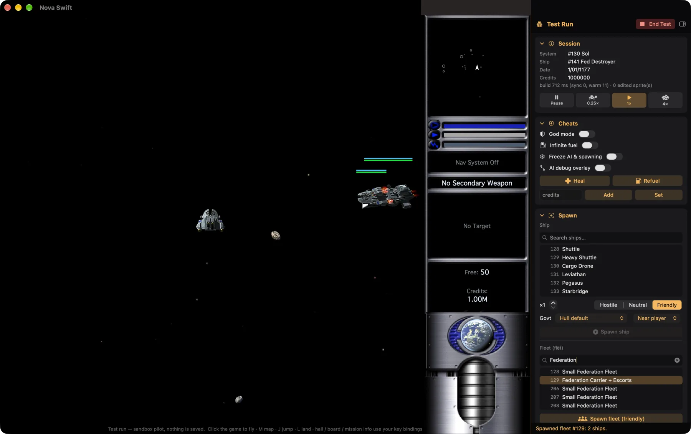

What a plug-in is
An EV Nova plug-in is a file of resources: small typed records that define the game's content. A plug-in adds new records or overrides existing ones by id. Some of the types you will meet:
| Type | Defines |
|---|---|
shïp | A ship hull: speed, armor, shields, cargo, slots. |
oütf | An outfit you can buy and install. |
wëap | A weapon: shots, beams, missiles. |
spöb | A planet or station. |
sÿst | A star system. |
mïsn, crön | Missions, and timed events that run in the background. |
gövt, përs, flët | Governments, named pilots and fleets. |
shän, spïn | How a ship is drawn, and how a planet's or shot's sprite is picked. |
dësc, STR# | Descriptions and text. |
A plug-in only needs to contain what it adds or changes. It loads on top of the base game's data, and later plug-ins override earlier ones. A total conversion replaces the base scenario entirely. The community reference for all of this is the EV Nova Bible, the original developer documentation of every resource type and field. It is the source for the field names and the control-bit rules used below, so keep a copy open while you work.
The Plug-in Editor
NOVA Swift has a built-in editor so you do not need a separate resource tool. On Mac it is a full-window editor opened from the Plugin Editor button next to Plugins on the main menu. The Linux and Steam Deck app also has a Plugin Editor on its main menu with the same layout and tools. The editor is not on iPhone, iPad or Apple TV. See also the editor page.

The editor works in a diff layer: your plug-in holds only what you added or overrode, and the base data is context. Saving never writes out base resources unless you force a full export, which shows a warning. Everything you export as a plain plug-in must load in the original EV Nova too. HD art is an extra layer that the original ignores.
The Godot editor's tools are: Overview, Resources, Galaxy Map, Star System, Story & Bits, Validation, Project & Export and Bundle Files. It shares its document, undo and checks with the Mac editor, but it is newer and has seen less use.
Creating a plug-in
Open the editor and start a new plug-in
From the main menu choose Plugin Editor. Create a new document, or open an existing plug-in to change it. The Overview tool shows what your plug-in adds or changes, and recent plug-ins.
Set the project details
In Project & Export, give it a name and author.
Add or override resources
Duplicate a base ship or planet and change it, or add a new resource with a free id. You can rename, change the id, duplicate, delete or revert any resource. Changed resources show how they differ from the base game.
Editing resources
The Resources tool lists every type with a search box. Selecting a resource opens a form built from the real field layouts of the game, grouped into cards. Fields that point at other resources (a ship's weapons, a planet's graphic) open a searchable picker, and flags appear as a checkbox grid. Editors cover 23 resource types, and any other type can be edited as raw hex so nothing is locked. Ship, weapon and outfit overviews show stats computed by the game engine's own math, and a hardpoint editor lets you place weapon and engine exit points on the ship's sprite.
Every change is one undo step. A validation pass flags problems the game would trip over, such as references to missing resources, ids out of range, field limits and bad control-bit syntax, and explains each in plain language.

Galaxy and system editors
- Galaxy Map: drag systems, and add or remove hyperlinks between them. The Mac editor also shows government colours and nebulae.
- Star System: place planets and stations (stellars) and manage the system's links. On Mac, it uses the real sprites and an embedded live game preview that reloads as you edit.

Graphics, sound and HD art
Graphics and sound editors let you import PNG images and WAV sounds, previewing them as the game will use them. Sprite sheets can be imported as a grid or per-frame with a chosen rotation count. The sprite viewer has a frame scrubber and playback, and sounds show a waveform.
For HD art and 3D models, the Mac editor can attach an HD sprite or model to any resource, show it side by side with the classic art, and save it into a .nsx folder or embed it in the plug-in file. See HD art packs for how players use it. Gameplay and hit boxes stay classic whichever art you use.
Missions and the control-bit (NCB) tools
Missions and crons are wired together by control bits and small scripts called NCB. Availability tests look like !(b511 | b515) & !b350, and set expressions look like b350 b6666. The tokens are the Bible's: bN a control bit, oN an outfit, eN an explored system, and so on, with set operations to start, abort or fail a mission, grant outfits, move the player and more.
One catch from the original: flat chains such as b1 | b2 | b3 are not evaluated like ordinary boolean logic. The Bible advises using parentheses to group each operation, and so does the editor's checker.
The Story & Bits tool gives you a control-bit index (which missions set and test each bit), a mission flow graph with search and an "only my changes" view, and mission and cron cards. It reports dead ends and missions that can never be offered. The same data powers the in-game Story Guide.
Test Run and debug panel
The Test Run button starts a real game on your plug-in layered over the base game, using a throwaway pilot, so you do not need to save or install first. You can land at the real spaceport (trade, outfitter, shipyard, bar, mission board), and missions and crons run. A debug panel lets you spawn ships and fleets, give outfits, set control bits, start missions, jump anywhere, change the time scale, turn on god mode and use the console.

Not simulated in a test run. Landing clearance, bribes and tribute, escort commands in the comm windows, capturing from the plunder dialog (use the panel's Capture instead), hypergates, wormholes and domination. Check those in the real game.
Saving and exporting
Save as a Windows-style .rez (loads in EV Nova CE) or as a classic Mac resource-fork file. A multi-file plug-in is saved back to its own files and only changed ones are rewritten. A total conversion folder opens and saves as a unit. The editor autosaves a recovery copy every 60 seconds while there are unsaved changes, and offers to restore after a crash. The Mac editor can also Install your plug-in straight into the game.
On Mac the app is sandboxed, so saving asks you to choose a location.
Testing in the real game
Install it
Use the editor's Install, or the Plug-ins screen's Import. See Installing plug-ins.
Check the load order
If another plug-in overrides the same resources, yours may be hidden. The editor shows conflicts with other enabled plug-ins.
Play it
Start a new pilot if you made a total conversion. Use the Debug suite console to jump and set things up quickly.
Test with the original, if you can
A plain
.rezexport should also work in EV Nova CE. That is the best check that you stayed compatible.
Sharing and listing in the catalog
Zip your plug-in folder as usual and host it at a public, direct HTTPS download. Players can then import it, or you can list it in the catalog so it appears in everyone's Plug-ins screen and on the website.
Fork the repo
Add an entry to
catalog.jsonCopy an existing one. Required fields are
id,name,author,version,summary,isTotalConversionanddownloadURLs.Run the checks
Install
jsonschema, then run the validator, optionally with--urlsto fetch every link.Open a pull request
A GitHub Action runs the same checks.
pip install jsonschema
python3 scripts/validate.py
python3 scripts/validate.py --urls| Field | Notes |
|---|---|
id | Lowercase with dashes, such as evo-facelift. It becomes the folder name on players' devices, so never change it. |
name, author | Display text. |
version | Free text compared number by number (1.10 is newer than 1.9). Bump it for each release so players see Update. |
summary | One or two sentences for the card (240 characters max). |
description | Longer text; Markdown is allowed. |
tags | The app's filters use story, graphics, gameplay, ships and patch. |
isTotalConversion | True for total conversions (they are not a tag). |
downloadURLs | Direct HTTPS links to the file itself, tried in order. Not a web page, and nothing behind a login or captcha. |
sizeBytes, sha256 | Download size and SHA-256 of the first link. A checksum is welcome. |
homepageURL, sourceURL, license | Where to learn more, and the license or redistribution note. |
iconURL, screenshotURLs | HTTPS links. Skip them if you cannot use the art; the app shows a placeholder. |
dependencies | Ids of other catalog plug-ins that are installed first. |
The schema also allows optional fields such as minNovaSwiftVersion, addedDate, updatedDate and popularity; see schema/catalog.schema.json in the repo. The catalog does not accept EV Nova base data, and only rehosts a plug-in when the author's readme says that is allowed (see the rules).
Multiplayer. Servers and players are matched on gameplay content. If your plug-in is mostly art and sound, players can keep playing together without having the same version. A plug-in that changes ships, systems or missions must match exactly.